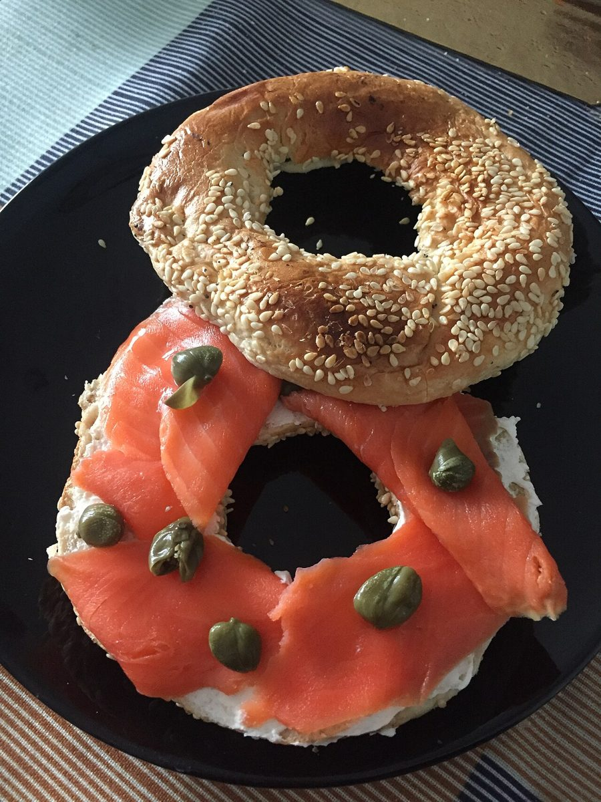

Bagel粉音

ベーグル / 千葉県いすみ市
千葉県いすみ市にあるベーグルのお店「Bagel 粉音」のご案内ページです。営業時間やメニューなど、詳しいことは準備中。まずはInstagramをのぞいてみてください。
制作側の連想
音の字と、まんなかの穴
お店の由来は分かりません。制作側は、屋号の「音」の字から、オルゴールの穴あきの譜面(紙の帯に空いた穴が音になる仕組み)を連想しました。ベーグルの真ん中に空いた穴と重なって見えたので、このページは「穴あきの紙の帯」の作りにしています。制作側の連想で、お店の理念・由来とは無関係です。
五つの穴
ページを譜面の音符にして
丸いものたち(イメージ)
穴・窯・粉
写真はお店のものではなく、国外・撮影地不明のフリー素材です。



ご案内
お店のこと(確認できたものだけ)
| 所在地 | 〒299-4616 千葉県いすみ市岬町長者37-3 |
|---|---|
| 電話 | 0470-64-4802 |
| 営業時間 | 準備中 |
| 定休日 | 準備中 |
| ご予約 | 準備中 |
| 駐車場 | 準備中 |
| SNS | Instagram @bagelconon |